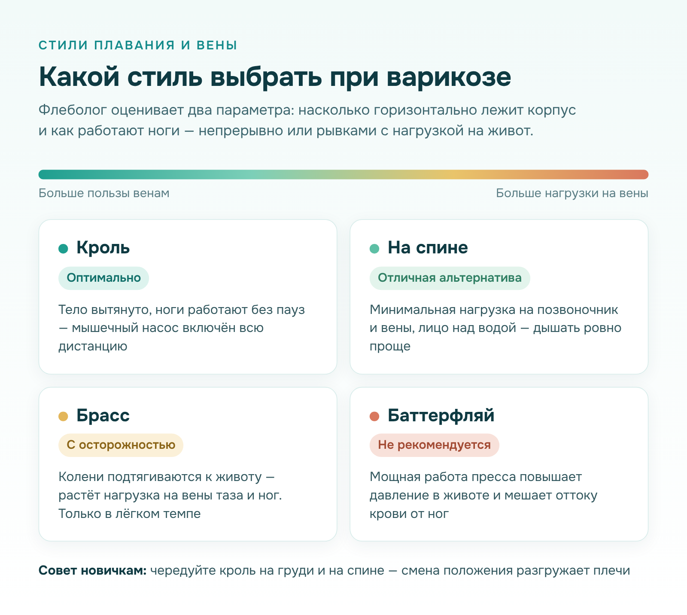
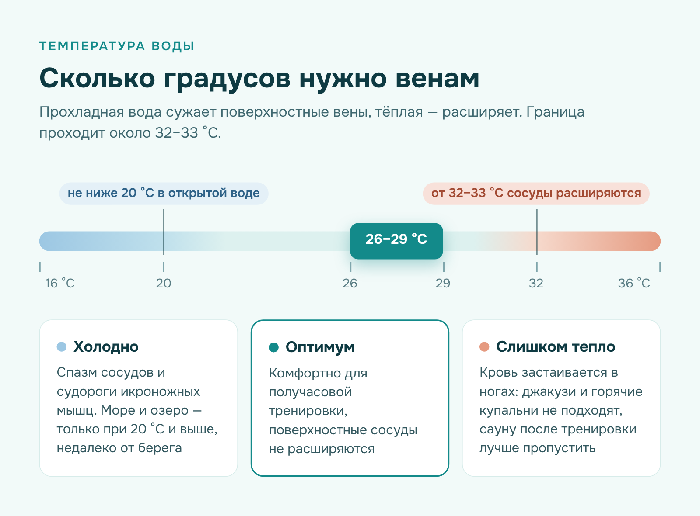
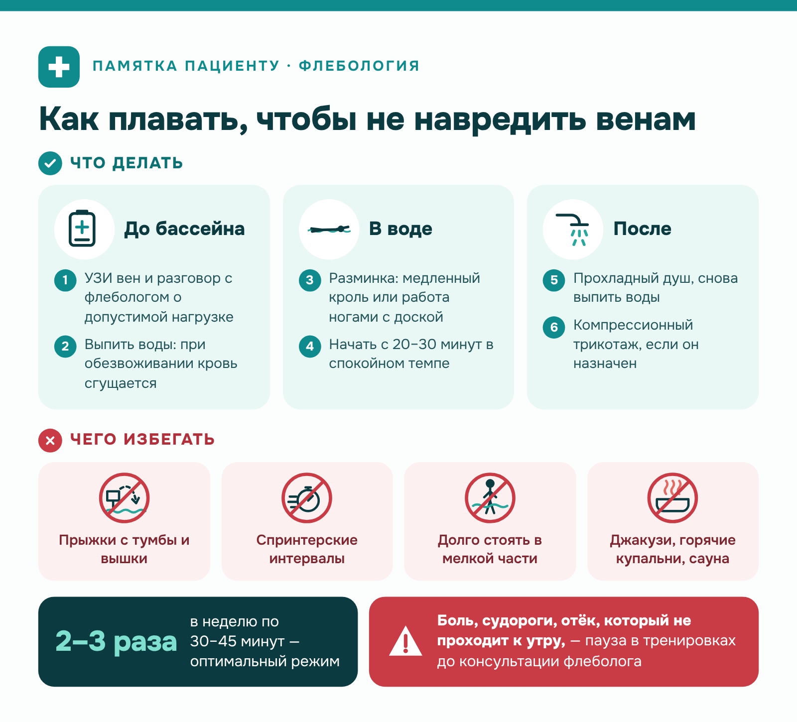

Флебологическая клиника (flebogroup.ru) · Медицина · статья для клиники
Статья для флебологической клиники: плавание при варикозе
Задача
Написать экспертную статью для блога флебологической клиники: можно ли плавать при варикозе, каким стилем и в какой воде, кому бассейн противопоказан. Тестовое задание на медицинский пул авторов с жёсткими требованиями к точности.
Решение
Сразу ответила на вопрос из заголовка, дальше — механизм пользы, разбор четырёх стилей по критериям флеболога, температурные границы, правила тренировки, противопоказания и FAQ. Каждое утверждение опирается на клинические рекомендации Минздрава России, рекомендации ESVS 2022, исследования подводного УЗИ и нормы активности ВОЗ — список источников в конце статьи. Термины объяснила прямо в тексте, без обещаний вылечить варикоз плаванием.
Результат
Статья для пациентов с выверенными цифрами и пятью научными источниками, со стоп-сигналами и противопоказаниями, которые прямо отправляют читателя к флебологу.
Можно ли заниматься плаванием, если у вас варикоз?
Да, и флебологи относят водные тренировки к самым щадящим нагрузкам для вен ног. Вода равномерно сжимает голени, мышцы ритмично сокращаются, а горизонтальное положение тела облегчает отток крови к сердцу.
Плавание при варикозе уменьшает тяжесть и отёчность к вечеру, а результат во многом зависит от трёх вещей: стиля, температуры воды и темпа. Разберём каждую.
Почему плавание полезно при варикозе?
В воде часть привычной нагрузки на вены исчезает, а внешнее давление поддерживает сосудистые стенки. Благоприятное действие обеспечивают пять факторов, которые работают одновременно:
- Гидростатическое давление. Так называют силу, с которой толща воды сжимает погружённое тело. Она действует как компрессионный чулок: каждые 10 см глубины добавляют около 7,4 мм рт. ст.
- Мышечный насос. При каждом ударе ногами икроножные мышцы сокращаются и выталкивают кровь вверх.
- Нет гравитационной нагрузки. В горизонтальном положении крови не нужно подниматься от стоп к сердцу, поэтому давление в венах голени снижается в несколько раз.
- Тонус сосудов. Прохладная вода рефлекторно сужает поверхностные вены, а регулярные занятия укрепляют мышцы голени.
- Дыхание. На глубоком вдохе давление в груди падает, и кровь активнее притекает к сердцу.
Эффект подтверждён инструментально: подводное УЗИ показывает, что при погружении диаметр варикозных вен уменьшается, а обратный ток крови ослабевает.
Каким стилем плавать лучше всего?
Для флеболога важны два параметра: положение корпуса относительно поверхности и характер работы ног. Чем ровнее лежит тело и чем непрерывнее работают ноги, тем больше пользы венам.

Брасс и баттерфляй проигрывают не из-за сложности техники, а из-за того, что на толчке нагружают живот и таз. По этим критериям основные стили оцениваются так:
- Кроль (вольный стиль) — оптимальный выбор. Тело вытянуто горизонтально, ноги работают непрерывно, поэтому мышечный насос включён на всей дистанции.
- Плавание на спине — отличная альтернатива. Нагрузка на позвоночник и вены минимальна, а лицо остаётся над водой, и дышать ровно проще.
- Брасс — с осторожностью. При толчке колени разводятся и подтягиваются к животу, поэтому нагрузка на вены таза и ног возрастает. В лёгком темпе стиль допустим.
- Баттерфляй — не рекомендуется. Мощная работа пресса повышает внутрибрюшное давление, то есть давление в полости живота, и затрудняет отток крови от ног.
Новичкам удобно чередовать кроль на груди и на спине: смена положения разгружает плечи, и тренировка не утомляет ноги.
Чего стоит избегать в бассейне?
Польза сохраняется, пока нагрузка умеренная. Прыжки с тумбы или вышки лучше исключить: в момент прыжка рефлекторная задержка дыхания на мгновение повышает давление в брюшной полости.
Второй враг вен — тепло. Вода теплее 32–33 °C расширяет сосуды, поэтому в джакузи и горячих купальнях кровь застаивается в ногах. Сауну после тренировки тоже лучше пропустить.
Оптимальная температура воды при болезнях вен — 26–29 °C: она комфортна для получасовой тренировки и не расширяет поверхностные сосуды.

Третий момент — темп. Спринтерские интервалы сопровождаются задержкой дыхания и напряжением пресса, поэтому венам полезнее ровное плавание. Долгое стояние в мелкой части возвращает ногам вертикальную нагрузку, как на суше. Бассейн приносит пользу, пока человек двигается, а отдыхать лучше лёжа на воде у бортика.
Как плавать, чтобы не навредить?
Безопасность зависит от подготовки и от того, что вы делаете после выхода из воды. Удобно представлять тренировку как три этапа: до бассейна, в воде и после.

Первый шаг — не в бассейне, а в кабинете врача: допустимую нагрузку при варикозе определяет флеболог по результатам осмотра. Дальше флебологи советуют соблюдать несколько правил:
- Перед покупкой абонемента сделайте УЗИ вен и обсудите с врачом допустимую нагрузку.
- Начинайте с 20–30 минут в спокойном темпе и постепенно увеличивайте время.
- Отведите начало занятия разминке: медленному кролю или работе ногами с доской.
- После занятия примите прохладный душ и наденьте компрессионный трикотаж, если он назначен.
- Пейте воду до и после заплыва: при обезвоживании кровь сгущается.
При боли, судорогах или отёке, который не проходит к утру, тренировки приостанавливают до консультации с флебологом.
Кому плавание противопоказано?
Ограничения связаны с риском осложнений со стороны вен и кожи. Посещение бассейна откладывают до разрешения врача в следующих ситуациях:
- острый тромбоз глубоких вен или тромбофлебит;
- открытые трофические язвы;
- мокнущая экзема или инфекция кожи ног;
- недавняя склеротерапия либо лазерная операция;
- декомпенсированная сердечная недостаточность;
- лихорадка или обострение хронической болезни.
Тромбофлебит, то есть воспаление вены с образованием сгустка, требует покоя до заключения УЗИ. Трофическая язва (незаживающая рана на голени) в общей воде легко инфицируется. После процедур срок возвращения к тренировкам определяет флеболог.
Часто задаваемые вопросы
Пациенты чаще всего уточняют у врача несколько практических моментов.
Как часто можно плавать с варикозом ног?
Оптимальный режим — 2–3 тренировки в неделю по 30–45 минут. ВОЗ советует взрослым набирать 2,5–5 часов умеренной активности за семь дней, поэтому плавание удобно сочетать с ходьбой.
Заменит ли плавание компрессионный трикотаж?
Нет, эти методы дополняют друг друга. Вода поддерживает вены только во время заплыва, а чулки работают весь день. Клинические рекомендации Минздрава России относят медицинскую компрессию к основным методам консервативной терапии, поэтому отказываться от неё без согласования с врачом нельзя.
Можно ли плавать в открытой воде — в море или озере?
Да, если температура воды не ниже 20 °C и заплыв проходит недалеко от берега. Холод вызывает спазм сосудов и судороги икроножных мышц. Венам больше вредит жара на пляже, поэтому загорать лучше в тени.
Можно ли плавать в бассейне с хлоркой?
Да, обеззараживающие вещества не влияют на вены, а их концентрацию ограничивают санитарные нормы. После тренировки ноги стоит ополоснуть под душем и увлажнить кремом.
Статья носит информационный характер и не заменяет очную консультацию флеболога.
Источники
При подготовке статьи использованы клинические рекомендации и научные публикации:
- Клинические рекомендации «Варикозное расширение вен нижних конечностей». Министерство здравоохранения Российской Федерации, 2024. URL: https://pravo.ppt.ru/klinicheskie-rekomendatsii/305129
- De Maeseneer M. G., Kakkos S. K., Aherne T. et al. European Society for Vascular Surgery (ESVS) 2022 Clinical Practice Guidelines on the Management of Chronic Venous Disease of the Lower Limbs // European Journal of Vascular and Endovascular Surgery. 2022. Vol. 63, № 2. P. 184–267. DOI: https://doi.org/10.1016/j.ejvs.2021.12.024
- Caggiati A., Lattimer C., Kalodiki E. et al. Underwater Sonography of Leg Veins // EJVES Short Reports. 2018. Vol. 41. P. 13–15. URL: https://pmc.ncbi.nlm.nih.gov/articles/PMC6251367/
- Bissacco D., Mosti G., D’Oria M. et al. Rationale and current evidence of aquatic exercise therapy in venous disease: A narrative review // Vascular. 2023. Vol. 31, № 5. DOI: https://doi.org/10.1177/17085381221102783
- WHO guidelines on physical activity and sedentary behaviour. Geneva: World Health Organization, 2020. URL: https://www.who.int/publications-detail-redirect/9789240015128